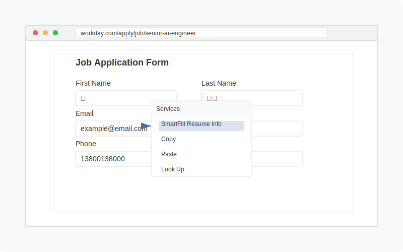

Intelligent Resume Auto-Fill Tool for macOS
SmartFill.AI uses advanced AI technology to automatically fill in job application forms with your resume information. Save time and reduce errors when applying for jobs.
 View on GitHubAccess SmartFill.AI directly from the right-click context menu in any application, making it easy to fill forms in browsers, documents, and more.
Automatically identifies form field types (name, email, phone, education, work experience, etc.) based on context and labels.
Works with both English and Chinese field labels, making it versatile for international job applications.
All personal information is stored locally on your computer, ensuring your data remains private and secure.
Easily manage and update your resume information through simple JSON profiles.
Special handling for Workday application forms, one of the most common job application platforms.
# Clone the repository
git clone https://github.com/zyxcambridge/autofilltable.git
cd autofilltable
# Install dependencies
pip install rumps pyobjc-framework-Quartz pyobjc-core openai requests cryptography keyring tk Pillow
# Run the installation script
./install_service.shFor detailed instructions on using with Workday forms, see the Workday Guide.